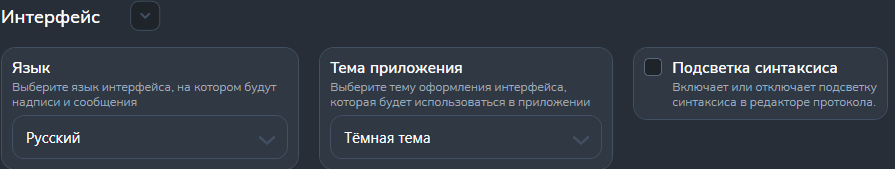

Раздел "Протокол"
Раздел предназначен для настройки внешнего облика программы.
На рисунке 1 показано содержание раздела.

Синтаксис ПК
- Опция "Подсветка синтаксиса" отвечает за подсвечивание языка ПК определёнными цветами в зависимости от назначения синтаксисе ПК.
Дополнительные функции протокола
- Опция "Тема приложения" позволяет выбрать цветовую гамму программы.
- Опция "Язык" позволяет выбрать язык интерфейса программы.